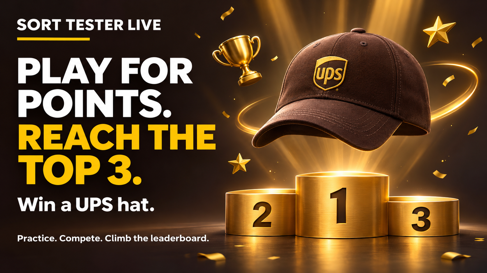

Welcome back, parcel_fox

Test your skills and study the chart.
!
The official season has started
Ranked points now count toward the season leaderboard.
Sort-change announcement · sample
Follow the current worksite chart.
Where do you want to start?
You are a guest. Ranked and the leaderboard need an account. Use Log in at the top when you want one.